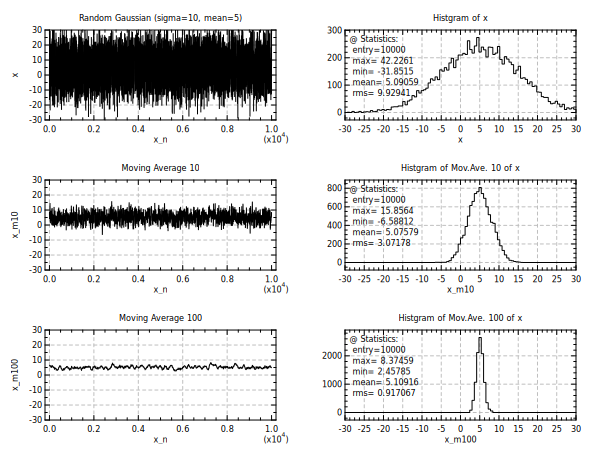

opt (gd:1)
set x = random(10000,gaus,10,5)
div 2 3
plot x (yr:-30,30 tl:"Random Gaussian (sigma=10, mean=5)" yt:10 yn:2)
hplot x (xr:-30,30 tl:"Histgram of x" xt:5)
stat x (cp:0.02,0.9 rc:1)
plot x (yr:-30,30 mv:10 tl:"Moving Average 10" yt:10 yn:2)
hplot x_m10 (xr:-30,30 tl:"Histgram of Mov.Ave. 10 of x" xt:5)
stat x_m10 (cp:0.02,0.9 rc:1)
plot x (yr:-30,30 mv:100 tl:"Moving Average 100" yt:10 yn:2)
hplot x_m100 (xr:-30,30 tl:"Histgram of Mov.Ave. 100 of x" xt:5)
stat x_m100 (cp:0.02,0.9 rc:1)
